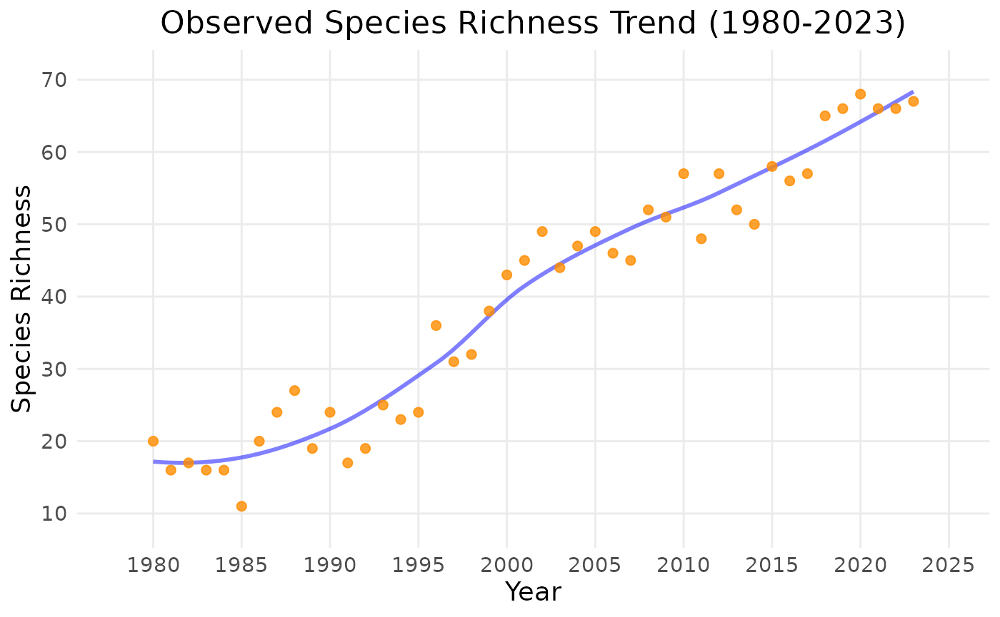

Introduction
The goal of this tutorial is to get you familiar with how to use the b3gbi package, which contains a number of functions for calculating and plotting biodiversity indicators from GBIF occurrence cubes. The package is not ready for official release yet, but it is publicly available at https://www.github.com/b-cubed-eu/b3gbi.
Below I will explain how to install the package on your own computer, and give a quick tutorial on the core functions, with examples. Given that the package is unfinished and has undergone very limited testing, it is possible that you will encounter errors. If you are unable to install the package on your computer, you can also clone it through github.
Since b3gbi is only available on github, you will need the R package called devtools to install it.
Package Installation
install.packages("devtools") # unnecessary if you already have devtools
devtools::install_github("b-cubed-eu/b3gbi")Core Functions
Let’s have a look at the core functions of the b3gbi package. The first one is called process_cube() and is used to import GBIF occurrence cubes from .csv files into R objects. It is very simple to use. You only need to provide it with the name and location of a cube in .csv format. Note that there are different versions of GBIF cubes floating around, and the format has changed. Since most of the code for this package was created before the present generation came available, it is compatible with both the old and new cubes. The old ones come with an additional .csv file containing taxonomic information for the cube.
# Function 1: process_cube()
# Description: Imports a data cube from a .csv file and prepares it as a processed_cube object for indicator calculations and plotting.
# Inputs:
# * Argument 1: data cube in .csv format
# * Argument 2 (only for older cubes): associated taxonomic info in .csv format
# Outputs:
# * processed_cube object containing the data cube as output_object$data along with various metadata.
# metadata include: range of years (as first_year and last_year),
# coordinate range (as xmin, xmax, ymin, ymax),
# number of grid cells (num_cells),
# number of species (num_species),
# total number of observations (num_obs),
# vector of kingdoms (kingdoms),
# number of families (num_families),
# resolutions (resolution)
# Example:
library(b3gbi)
europe_cube <- process_cube(system.file("extdata", "europe_insect_cube.csv", package="b3gbi"), system.file("extdata", "europe_insect_info.csv", package="b3gbi"))
europe_cube
#>
#> Processed data cube for calculating biodiversity indicators
#>
#> Date Range: 1809 - 2020
#> Single-resolution cube with cell size 1km ^2
#> Number of cells: 492
#> Coordinate range:
#> xmin xmax ymin ymax
#> 3289 7022 1491 4881
#>
#> Total number of observations: 434503
#> Number of species represented: 1960
#> Number of families represented: Data not present
#>
#> Kingdoms represented: 1
#>
#> First 10 rows of data (use n = to show more):
#>
#> # A tibble: 23,025 × 10
#> year cell_code taxonKey obs scientificName rank kingdom xcoord ycoord
#> <dbl> <chr> <dbl> <dbl> <chr> <fct> <fct> <dbl> <dbl>
#> 1 1809 1kmE7022N2801 4431691 1 Anthaxia nigr… SPEC… Animal… 7022 2801
#> 2 1849 1kmE5216N3202 4458870 1 Alosterna tab… SPEC… Animal… 5216 3202
#> 3 1850 1kmE5997N3236 8062927 1 Mesosa curcul… SPEC… Animal… 5997 3236
#> 4 1870 1kmE4974N3583 1347914 1 Podalonia hir… SPEC… Animal… 4974 3583
#> 5 1873 1kmE5217N3201 8707896 1 Pogonocherus … SPEC… Animal… 5217 3201
#> 6 1881 1kmE4427N2684 11712270 1 Liparis loese… SPEC… Animal… 4427 2684
#> 7 1881 1kmE4427N2685 11712270 1 Liparis loese… SPEC… Animal… 4427 2685
#> 8 1881 1kmE4769N3129 5141501 1 Sesia bembeci… SPEC… Animal… 4769 3129
#> 9 1884 1kmE4791N3258 4458681 1 Anidorus nigr… SPEC… Animal… 4791 3258
#> 10 1884 1kmE6420N3254 1143384 1 Pyrrhidium sa… SPEC… Animal… 6420 3254
#> # ℹ 23,015 more rows
#> # ℹ 1 more variable: resolution <chr>When you type the name of the cube object, the contents are displayed by a custom print function within the package. You can see the object structure using str().
str(europe_cube)
#> List of 11
#> $ first_year : num 1809
#> $ last_year : num 2020
#> $ coord_range :List of 4
#> ..$ xmin: num 3289
#> ..$ xmax: num 7022
#> ..$ ymin: num 1491
#> ..$ ymax: num 4881
#> $ num_cells : int 492
#> $ num_species : int 1960
#> $ num_obs : num 434503
#> $ kingdoms : int 1
#> $ num_families: chr "Data not present"
#> $ resolutions : chr "1km"
#> $ multi_res : logi FALSE
#> $ data : tibble [23,025 × 10] (S3: tbl_df/tbl/data.frame)
#> ..$ year : num [1:23025] 1809 1849 1850 1870 1873 ...
#> ..$ cell_code : chr [1:23025] "1kmE7022N2801" "1kmE5216N3202" "1kmE5997N3236" "1kmE4974N3583" ...
#> ..$ taxonKey : num [1:23025] 4431691 4458870 8062927 1347914 8707896 ...
#> ..$ obs : num [1:23025] 1 1 1 1 1 1 1 1 1 1 ...
#> ..$ scientificName: chr [1:23025] "Anthaxia nigrojubata Roubal, 1913" "Alosterna tabacicolor (Degeer, 1775)" "Mesosa curculionoides (Linnaeus, 1761)" "Podalonia hirsuta (Scopoli, 1763)" ...
#> ..$ rank : Factor w/ 1 level "SPECIES": 1 1 1 1 1 1 1 1 1 1 ...
#> ..$ kingdom : Factor w/ 1 level "Animalia": 1 1 1 1 1 1 1 1 1 1 ...
#> ..$ xcoord : num [1:23025] 7022 5216 5997 4974 5217 ...
#> ..$ ycoord : num [1:23025] 2801 3202 3236 3583 3201 ...
#> ..$ resolution : chr [1:23025] "1km" "1km" "1km" "1km" ...
#> - attr(*, "class")= chr "processed_cube"The cube itself is contained in a tibble (tidyverse version of data frame) called data, while other variables contain metadata.
Now let’s have a look at what indicators are available to calculate and plot.
available_indicators
#>
#>
#> Available Indicators
#>
#>
#> 1. Observed Species Richness
#> Class: obs_richness
#> Calculate map: yes, e.g. obs_richness_map(my_data_cube)
#> Calculate time series: yes, e.g. obs_richness_ts(my_data_cube)
#> Additional map function arguments: NA
#> Additional time series function arguments: NA
#>
#> 2. Total Occurrences
#> Class: total_occ
#> Calculate map: yes, e.g. total_occ_map(my_data_cube)
#> Calculate time series: yes, e.g. total_occ_ts(my_data_cube)
#> Additional map function arguments: NA
#> Additional time series function arguments: NA
#>
#> 3. Pielou's Evenness
#> Class: pielou_evenness
#> Calculate map: yes, e.g. pielou_evenness_map(my_data_cube)
#> Calculate time series: yes, e.g. pielou_evenness_ts(my_data_cube)
#> Additional map function arguments: NA
#> Additional time series function arguments: NA
#>
#> 4. Williams' Evenness
#> Class: williams_evenness
#> Calculate map: yes, e.g. williams_evenness_map(my_data_cube)
#> Calculate time series: yes, e.g. williams_evenness_ts(my_data_cube)
#> Additional map function arguments: NA
#> Additional time series function arguments: NA
#>
#> 5. Cumulative Species Richness
#> Class: cum_richness
#> Calculate map: no
#> Calculate time series: yes, e.g. cum_richness_ts(my_data_cube)
#> Additional map function arguments: NA
#> Additional time series function arguments: NA
#>
#> 6. Density of Occurrences
#> Class: occ_density
#> Calculate map: yes, e.g. occ_density_map(my_data_cube)
#> Calculate time series: yes, e.g. occ_density_ts(my_data_cube)
#> Additional map function arguments: NA
#> Additional time series function arguments: NA
#>
#> 7. Abundance-Based Rarity
#> Class: ab_rarity
#> Calculate map: yes, e.g. ab_rarity_map(my_data_cube)
#> Calculate time series: yes, e.g. ab_rarity_ts(my_data_cube)
#> Additional map function arguments: NA
#> Additional time series function arguments: NA
#>
#> 8. Area-Based Rarity
#> Class: area_rarity
#> Calculate map: yes, e.g. area_rarity_map(my_data_cube)
#> Calculate time series: yes, e.g. area_rarity_ts(my_data_cube)
#> Additional map function arguments: NA
#> Additional time series function arguments: NA
#>
#> 9. Mean Year of Occurrence
#> Class: newness
#> Calculate map: yes, e.g. newness_map(my_data_cube)
#> Calculate time series: yes, e.g. newness_ts(my_data_cube)
#> Additional map function arguments: NA
#> Additional time series function arguments: NA
#>
#> 10. Taxonomic Distinctness
#> Class: tax_distinct
#> Calculate map: yes, e.g. tax_distinct_map(my_data_cube)
#> Calculate time series: yes, e.g. tax_distinct_ts(my_data_cube)
#> Additional map function arguments: NA
#> Additional time series function arguments: NA
#>
#> 11. Species Richness (Estimated by Coverage-Based Rarefaction)
#> Class: hill0
#> Calculate map: yes, e.g. hill0_map(my_data_cube)
#> Calculate time series: yes, e.g. hill0_ts(my_data_cube)
#> Additional map function arguments: cutoff_length, coverage
#> Additional time series function arguments: cutoff_length, coverage
#>
#> 12. Hill-Shannon Diversity (Estimated by Coverage-Based Rarefaction)
#> Class: hill1
#> Calculate map: yes, e.g. hill1_map(my_data_cube)
#> Calculate time series: yes, e.g. hill1_ts(my_data_cube)
#> Additional map function arguments: cutoff_length, coverage
#> Additional time series function arguments: cutoff_length, coverage
#>
#> 13. Hill-Simpson Diversity (Estimated by Coverage-Based Rarefaction)
#> Class: hill2
#> Calculate map: yes, e.g. hill2_map(my_data_cube)
#> Calculate time series: yes, e.g. hill2_ts(my_data_cube)
#> Additional map function arguments: cutoff_length, coverage
#> Additional time series function arguments: cutoff_length, coverage
#>
#> 14. Species Occurrences
#> Class: spec_occ
#> Calculate map: yes, e.g. spec_occ_map(my_data_cube)
#> Calculate time series: yes, e.g. spec_occ_ts(my_data_cube)
#> Additional map function arguments: none
#> Additional time series function arguments: none
#>
#> 15. Species Range
#> Class: spec_range
#> Calculate map: yes, e.g. spec_range_map(my_data_cube)
#> Calculate time series: yes, e.g. spec_range_ts(my_data_cube)
#> Additional map function arguments: none
#> Additional time series function arguments: none
#>
#> 16. Occupancy Turnover
#> Class: occ_turnover
#> Calculate map: no
#> Calculate time series: yes, e.g. occ_turnover_ts(my_data_cube)
#> Additional map function arguments: none
#> Additional time series function arguments: noneThe indicators registered here are the ones that are actually working in the package. There are others, but they are not fully functional at the moment so have not been registered. Each available indicator is listed along with its class, and the functions used to calculate it as a map and/or time series.
The next function we need to understand is called compute_indicator_workflow(). This is the core of the package, where the work of calculating the indicator is done. Each indicator comes with its own wrapper functions, and these should be used rather than directly calling compute_indicator_workflow(). The wrapper functions are listed below.
# Function 2: compute_indicator_workflow()
# Description: Calculates a biodiversity indicator over time or space from a processed_cube object. Should be called by one of the wrapper functions listed below.
# Inputs:
# * Argument 1: x, a processed_cube object
# * Argument 2: type, the type of indicator to calculate
# * Argument 3: dim_type, dimension to calculate the indicator across (time, 'ts', or space, 'map').
# * Argument 4: cell_size (optional), the length (in km) of grid cells to use
# * Argument 5: level (optional), the scale of region to calculate over (country, continent, world). Uses the whole cube by default.
# * Argument 6: region (optional), the name of the region to calculate over (e.g. Germany, Europe). Uses the whole cube by default.
# * Argument 7: cube_crs (optional), the projection the cube uses if not LAEA
# Outputs:
# * indicator_ts or indicator_map object containing a data frame of indicator values mapped to years or grid cells, along with various metadata.
# metadata include: range of years (as first_year and last_year),
# coordinate range (as xmin, xmax, ymin, ymax),
# number of grid cells (num_cells),
# number of species (num_species),
# total number of observations (num_obs),
# vector of kingdoms (kingdoms),
# number of families (num_families),
# resolutions (resolution)
#
# Wrapper functions:
# * obs_richness_map(): Calculate a gridded map of observed richness
# * obs_richness_ts(): Calculate a time series (trend) of observed richness
# * cum_richness_ts(): Calculate cumulative richness over time
# * total_occ_map(): Calculate the total number of records over a gridded map
# * total_occ_ts(): Calculate the total number of records over time
# * occ_density_map(): Calculate the density of records over a gridded map
# * occ_density_ts(): Calculate the density of records over time
# * williams_eveness_map(): Calculate Williams' evenness over a gridded map
# * williams_evenness_ts(): Calculate Williams' evenness over time
# * pielou_evenness_map(): Calculate Pielou's evenness over a gridded map
# * pielou_evenness_ts(): Calculate Pielou's evenness over time
# * ab_rarity_map(): Calculate abundance-based rarity over a gridded map
# * ab_rarity_ts(): Calculate abundance-based rarity over time
# * area_rarity_map(): Calculate area-based rarity over a gridded map
# * area_rarity_ts(): Calculate area-based rarity over time
# * newness_map(): Calculate the mean year of occurrence over a gridded map
# * newness_ts(): Calculate the mean year of occurrence over time
#
# Example:
library(b3gbi)
Europe_observed_richness_map <- obs_richness_map(example_cube_2, first_year = 1980)
Europe_observed_richness_map
#> Gridded biodiversity indicator map
#>
#> Name of Indicator: Observed Species Richness
#>
#> Map of Europe
#>
#> Projected CRS: EPSG:3035
#>
#> Coordinate range:
#> xmin ymin xmax ymax
#> -3290942 -3074174 10026336 10514061
#>
#> Grid cell size: km^2
#> Number of cells: 3226
#>
#> Observation years: 1980 - 2020
#> Total years with observations: 41
#>
#> Number of species represented: 1960
#> Number of families represented: Data not present
#>
#> Kingdoms represented: 1
#>
#> First 10 rows of data (use n = to show more):
#>
#> # A tibble: 3,226 × 3
#> cellid area_km2 diversity_val
#> <int> [km^2] <int>
#> 1 1 0.708 NA
#> 2 2 127. NA
#> 3 3 48.2 NA
#> 4 4 560. NA
#> 5 5 837. NA
#> 6 6 569. NA
#> 7 7 7.26 NA
#> 8 8 222. NA
#> 9 9 180. NA
#> 10 10 2248. NA
#> # ℹ 3,216 more rowsWhen you type the name of the indicator object, you will again see that it is plotted by an internal function of the package. As with the cube objects, indicator objects contain a tibble called data. In the case of a mapped indicator, the tibble is also an sf object containing geometry information for cell.
Each indicator object belongs to two specialized object classes which determine how it is handled when you use the plot() command. First, it has either the class ‘indicator_ts’ or ‘indicator_map’. Second, it has a class specific to the indicator type. You can see this using the class() command.
class(Europe_observed_richness_map)
#> [1] "indicator_map" "obs_richness"These are S3 classes (S3 being one of several objected oriented programming systems contained within R).
The final functions we will need to interface with are the plot functions. These are plot_ts() and plot_map(), but in fact they are called using plot(). The plot functions offer quite a few arguments to customize the output, but the plotting is done using the ggplot package, so further customization is quite easy.
# Function 3: plot_ts()
# Description: Plots an indicator_ts object as a time series using ggplot. Called by plot().
# Inputs:
# * Argument 1: x, an indicator_ts object
# * Argument 2: title (optional), specify a title for the plot
# * Argument 3: auto_title (optional), specified by the calling function if title is set to "auto"
# * Argument 4: y_label_default (optional), specified by the calling function if no y_label is provided
# * Argument 5: suppress_y (optional), default is "FALSE". Set to "TRUE" to turn off y axis text
# * Argument 6: smoothed_trend (optional), default is "TRUE". Set to "FALSE" to avoid displaying only the time series, without a smoothed trend
# * Argument 7: linecolour (optional), sets the colour of the unsmoothed time series line
# * Argument 8: trendlinecolour (optional), sets the colour of the smoothed trend line
# * Argument 9: envelopecolour (optional), sets the colour of smoothed trend envelope
# * Argument 10: gridoff (optional), default is "FALSE". Set to "TRUE" to turn off grid lines on the plot
# * Argument 11: x_label (optional), use to set a custom label for the x-axis
# * Argument 12: y_label (optional), use to set a custom label for the y-axis
# * Argument 13: min_year (optional), set the first year that will be plotted
# * Argument 14: max_year (optional), set the final year that will be plotted
# * Argument 15: x_breaks (optional), set the number of breaks along the x-axis
# * Argument 16: y_breaks (optional), set the number of breaks along the y-axis
# * Argument 17: wrap_length (optional), set maximum length of text allowed on a single line for the plot title
# Outputs:
# * Time series plot with optional smoothed trend overlay. The plot can be further customized (beyond the provided arguments) using ggplot functions.
# * Plots can be saved using ggsave.
# Example:
library(b3gbi)
Europe_observed_richness_ts <- obs_richness_ts(example_cube_2, first_year = 1980)
plot(Europe_observed_richness_ts)
# Function 4: plot_map()
# Description: Plots an indicator_map object as a gridded map using ggplot. Called by plot().
# Inputs:
# * Argument 1: x, an indicator_map object
# * Argument 2: title (optional), specify a title for the plot
# * Argument 3: auto_title (optional), specified by the calling function if title is set to "auto"
# * Argument 4: leg_label_default (optional), legend title specified by the calling function if no leg_label is provided
# * Argument 5: xlims (optional), use to set custom map limits
# * Argument 6: ylims (optional), use to set custom map limits
# * Argument 7: trans (optional), set transformation to apply to the legend, e.g. "log10"
# * Argument 8: breaks (optional), set custom breaks for the legend
# * Argument 9: labels (optional), set custom labels for the legend
# * Argument 10: Europe_crop (optional), default is "TRUE". Crops outlying islands when plotting a continental map of Europe. You can set this to "FALSE" to show the islands, but the output will be less pretty.
# * Argument 11: surround (optional), default is "TRUE". Shows surrounding countries when plotting a single country. Set to "FALSE" to show only the country of interest, but output will be less pretty.
# * Argument 12: panel_gb (optional), set panel background colour. Default is "white".
# * Argument 13: legend_title (optional), set a custom legend title
# * Argument 14: legend_limits (optional), set custom limits for the legend
# * Argument 15: legend_title_wrap_length (optional), set maximum length of text allowed on a single line for the legend title
# * Argument 16: title_wrap_length (optional), set maximum length of text allowed on a single line for the plot title
# Outputs:
# * Time series plot with optional smoothed trend overlay. The plot can be further customized (beyond the provided arguments) using ggplot functions.
# * Plots can be saved using ggsave.
# Example:
library(b3gbi)
Europe_observed_richness_map <- obs_richness_map(example_cube_2)
plot(Europe_observed_richness_map)
There are some additional functions in the package that you can make use of, such as list_species(), which lists the species contained in a cube or indicator object, but they are mostly quite simple.
To be continued…